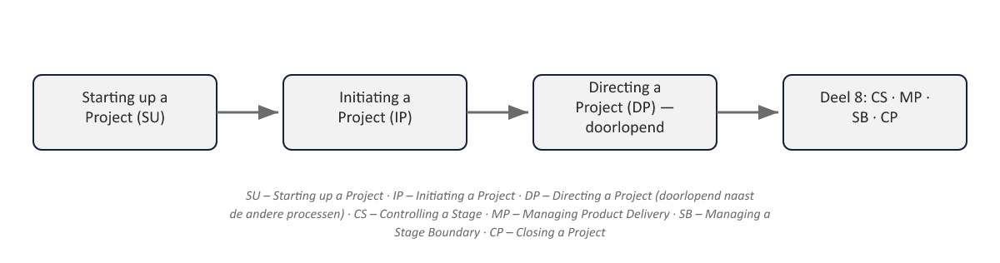

Sheet 1Titel
Project- en Programmamanagement
Niveau 1 · Deel 7: Opstarten, initiëren, sturen
Sheet 2Van bouwstenen naar tijdlijn
Deel 3–6: zeven practices, los behandeld
Deel 7–8: zeven processen — hoe ze chronologisch samenkomen

Sheet 3Directing a Project: geen fase, maar doorlopend
Loopt van begin tot eind naast de andere processen
Vandaag: SU, IP, én DP
Sheet 4Starting up a Project: doel
Is dit project de moeite van het opstarten waard?
Bewust lichtgewicht — slechte projecten vroeg stoppen
Sheet 5SU: trigger en eerste stap
Trigger: het projectmandaat (van corporate/programmaniveau)
Eerste stap: Executive en projectmanager benoemen
Sheet 6SU: activiteiten
- Lessen ophalen
- Team samenstellen
- Outline business case
- Project Product Description
- Projectaanpak kiezen
- Initiatiefase plannen
Sheet 7SU: output
Project brief + initiation stage plan
→ verzoek aan stuurgroep om te mogen initiëren
Sheet 8Initiating a Project: doel
Een solide basis leggen vóór significante uitgaven
Anders dan SU: een volwaardige, eerste beheersfase
Sheet 9IP: activiteiten
| Practice (deel) | IP-activiteit |
|---|---|
| Business Case (deel 3) | Business case verder uitwerken: van outline naar detailed |
| Plans (deel 4) | Het Project Plan opstellen — met volledige product-based planning |
| Quality (deel 5) | De kwaliteitsmanagementaanpak opstellen |
| Issues (deel 5) | De issue- en wijzigingsbeheeraanpak opstellen, inclusief configuratiemanagement |
| Risk (deel 6) | De risicomanagementaanpak opstellen |
| Progress (deel 6 / principe 5) | Communicatiemanagementaanpak (o.a. Highlight Reports) + toleranties per niveau vaststellen |
- Tailoring vastleggen
- Risico-, kwaliteit-, issue- en communicatieaanpak
- Projectbesturing (toleranties)
- Project Plan
- Business case: outline → detailed
Sheet 10IP: output
Het Project Initiation Document (PID)
Gebaseerd — de maatstaf voor de rest van het project
Komt terug in deel 10 (capstone)
Sheet 11Directing a Project: doel
Sturen via besluiten op sleutelmomenten
Zonder zich met de uitvoering te bemoeien
Sheet 12DP: vijf besluiten
1. Initiatie autoriseren
2. Project autoriseren
3. Fase/exceptieplan autoriseren
4. Ad-hocsturing geven
5. Afsluiting autoriseren
Sheet 13Waarom DP niet aan één fase gebonden is
Ad-hocsturing tussen geplande momenten door
Precies wat ontbrak bij bevinding 2 en 3
Sheet 14De drie processen in samenhang

Sheet 15Vooruitblik
Deel 8: Controlling a Stage, Managing Product Delivery, Managing a Stage Boundary, Closing a Project